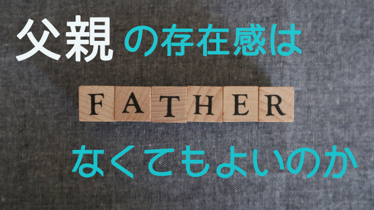
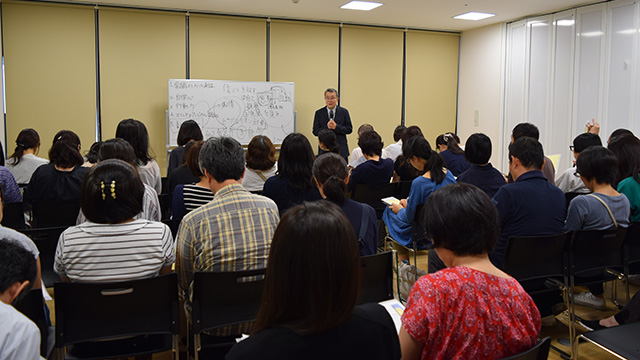

個人的な話だが、私は自分の子どもに一切影響力を与えないこと、極力父親としての存在感を示さないことを信条としている。
職業柄私は多くの親子関係を見てきた。そこで思うのは父親の存在感が大きい家庭と、そうでない家庭では後者のほうが子どもが伸び伸び育つ気がするからだ。
「昔に比べて父親の存在感が希薄になった」と嘆く向きもあるが、父親の大き過ぎる存在感がプラスに働くことは滅多にない。やたら子どもの勉強や生活態度に介入するか、自分の人生観―多くは経験談―を押しつけることに終始するからだ。子どもは萎縮するか反発するしかない。
そもそも存在感を誇示するのは、父親の威厳という古い価値観に囚われているか子どもを支配することで自己満足に浸りたいかのどちらかだ。そこからは本当の意味での父親の自信が感じられない。だからこそわざわざ子どもに「存在を誇示」したくなるのだろう。
子どもには子どもの人生がある。たとえ親であろうと人の人生航路に介入することは許されない。どんなに子どものためと信じても、所詮は親の価値観の範囲でしか物を言うことはできない。人生の初めにおいて、親という他者が子どもの行く末を特定の色彩で染め上げるようなことは慎まなければならない。それは子どもの将来を限定することになりかねない。
子どもの行状に危うさを感じても、子どもが要領よく行動できなくても、あるいはみすみす失敗すると分かっていても、介入したい欲求を抑制すること。子どもは色々痛い目に会いながらも最終的には逞しく我が道を切り拓いていくだろうと信じて、そっと見守ることが大切だと感じる。
この「見守る姿勢」は特に父親にとっては重要なファクターとなる。母親が細かいことに口出ししたり心配するのは仕方がない。それが母親というものだからだ。特に幼いときは母親の細かい気づかいは役に立つ。それに子どもも思春期くらいになると、母親の小うるさい（⁉）小言はうまく聞き流す術を覚え要領よくかわすようになる。だが父親が同じことをやるとそれはプレッシャーとなる。

子育てセミナー 親学第2弾より（7月15日）父親はもっと大きな視座で子どもの存在を捉えるべきだ。目先の損得や箸の上げ下げのような細かいことに拘わるのではなく、また自説を押しつけるのでもなく、子どもの可能性が大きく羽ばたくよう常に肯定的な眼差しで見守ることだ。
ならば子どもも伸び伸びと自分らしく生きることができる。
父親の「見守り」は母親のように密着するのでなく、子どもと少し距離をとり大きな視野で見ることによって子どもが全体としてどのような才能をもち、どのような方向に進みつつあるのかを把握している様子にある。
その上で子どもの細かい行状は母親（妻）から聞いておくこと、すなわち夫婦間のコミュニケーションを大切にすることだ。
「見守る」ことは、子どもに無関心になることでも甘やかすことでもない。子どもの現状を把握した上で、現状に囚われることなく我が子の「全体像」を見通すこと。そして背後から温かい視線を向け続けること。その姿勢にあるからこそ、イザというときも力を発揮することができる。
子どもが万一危機的状況に陥ったとき、大きく道を踏み外しそうになったときに救い出すことができる。
子どもを信じて肯定的に見守り、イザというときは全力で守るという姿勢でいる限り子どもはかえって問題も起こさず、自分にとって最良の道を歩み始める。
先に「父親の存在感を出さないようにする」と言ったのも、日頃余計な口出しをしないからこそ逆に良い意味での存在感を示すことができる。存在感を誇示しないからこそその存在は大きさを増し、影響力を行使しないからこそ将来に良い影響を及ぼす。
父親の存在はこのように逆説的に働く。
子どもはやがて社会に出て働き家庭をもち、様々な経験をするだろう。そうして自分も父親となったときに気づく。自分は父親の大きな愛に包まれていたことに。